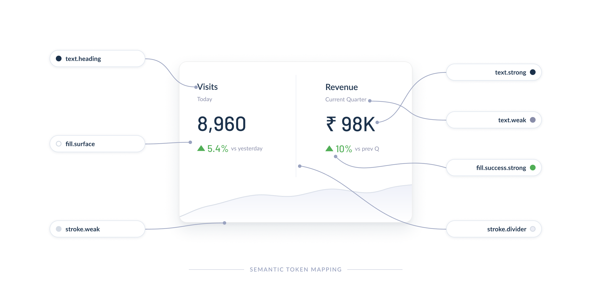

One design language, built to last. A 12-month project to give 40+ designers and 25+ engineers a shared foundation they could actually rely on.
Purpose
The goal was a design system teams would actually use. One that made the right decision easy and inconsistency hard. That meant going beyond a component kit and building a real shared language.
Give designers pre-built, decision-ready components so they could focus on solving problems instead of recreating buttons and form fields from scratch.
When everything has a dozen ways to solve it, teams slow down. A clear system makes the right choice the obvious choice.
The product was expanding. The system needed to grow with it without breaking what already existed or requiring a full rebuild every few months.
Designers were rebuilding the same components repeatedly across different projects. That time was being wasted rather than spent on meaningful design problems.
Without a shared foundation, every team made slightly different choices. The system needed to make consistency automatic rather than something teams had to remember to maintain.
Accessibility couldn't be a retrofit. WCAG 2.1 AA compliance needed to be built into every component so teams inherited it without extra effort.
Contribution
As Design Systems Lead, I worked across engineering, product, and brand to build something that would outlast the initial project. I wasn't just designing components. I was building the infrastructure for how the team designed together.
Process
Four phases, each building on the last. Starting with raw foundations and ending with the processes that kept the system healthy long after launch.
Before touching components, I mapped out the structural foundations the system would need to support. Starting with layout and hierarchy meant we avoided rebuilding things further down the line.
Tokens were the backbone of the system. Getting them right meant every component built on top would behave consistently, and could be updated in one place rather than a hundred.
With foundations in place, I built out the component library, covering every pattern teams reached for regularly. Each component was designed around real product usage, not just textbook coverage.
A design system nobody uses is just a Figma file. The final phase was about making it easy for teams to adopt and trust the system, and putting the right processes in place to keep it evolving.

Outcomes
The system became the central reference for the whole product organisation. The numbers reflect genuine changes to how teams worked, not just metrics tracked for the sake of it.
The design system became the central reference for 40+ product designers and 25+ engineers across the organisation. Duplicate work dropped significantly and design decision fatigue reduced noticeably across teams.
Shared vocabulary and consistent UI patterns reduced friction in design reviews and engineering handoffs. New joiners got up to speed faster because the documentation gave them the reasoning, not just the rules.
Reflections
A year of building something other people depend on teaches you things a shorter project never could.
The most successful systems have dedicated teams, roadmaps, and success metrics. Treating it as a one-time deliverable leads to drift as soon as the initial push is over.
Office hours, a Slack support channel, and celebrating team wins drove organic adoption far more effectively than telling people they had to use it.
Involving engineers early in component design prevented implementation surprises. Aligning on naming conventions and API structures before finalising designs saved significant rework.
The best documentation covers not just "what" but "why" and "when to use." Adding decision records and anti-patterns helped teams understand the reasoning rather than just following rules.
Semantic versioning helped teams understand the difference between breaking changes and additions. Deprecation warnings gave people time to migrate rather than scrambling to fix things.
Tracking component adoption rates, design-to-dev time, and accessibility scores gave us real evidence to justify continued investment, and helped us spot what wasn't working early.